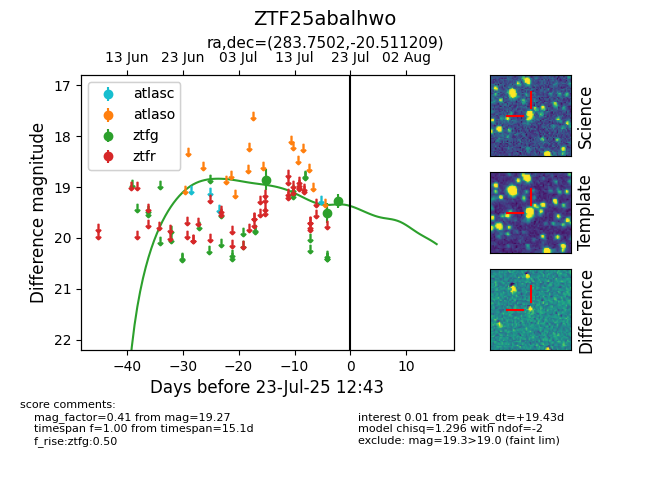

Target ZTF25abalhwo at 2025-07-23 11:52, see:
FINK: fink-portal.org/ZTF25abalhwo
Lasair: lasair-ztf.lsst.ac.uk/objects/ZTF25abalhwo
ALeRCE: alerce.online/object/ZTF25abalhwo
alt names
ZTF25abalhwo (ztf,fink)
coordinates:
equatorial (ra, dec) = (283.7502,-20.51121)
galactic (l, b) = (14.8810,-9.94663)
photometry
last ztfg=19.27
3 ztfg detections
